皆の衆
突然ですが、偽有栖川事件って憶えてますか？
ホラ、偽の皇族を騙って結婚式だかパーティーだかでお金を集めようとしていた二人組の事件。
当時は随分騒がれていたけど結局何の事件だったのかもよく判らないまま消えていった事件であった。
その中で犯人が宮崎県の某神社に資金提供を申し出ていたというニュースがあったのを記憶されている方、いますか？
当時その神社ではレジャーパークの建設を計画していたというのだが、その完成予想図が確かこんなだった記憶が…。
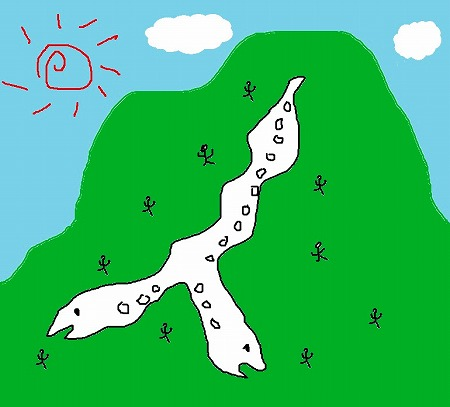
（※当時の記憶を元に最先端のCGで再現してみましたよ）
巨大な双頭蛇をモニュメントとしたレジャーパーク！
私のおぼろげな記憶では蛇には窓が開いていた、つまり中に人が入れるサイズの巨大な蛇である、ということだ！
恐らく数十メートル級の双頭蛇のオブジェというか建造物なのだろう。
（※この辺物凄く曖昧な記憶なんで、もし間違ってたらご指摘ください）
思わずのけぞると同時に脳内画像検索サーチがフル回転。
宮崎…神社…双頭…蛇…
ピコーン！（脳内で検索がヒットした音ね）
珍スポット界の一番星、都築響一大兄の
ROADSAIDE JAPANで紹介されていた神社のことか！
このサイトをご覧になっている諸君は当然ROADSAIDE JAPANのアスペクト版とちくま文庫版をそれぞれ2冊づつ所蔵されており、なおかつ神棚に供えておるであろうから、今更この聖典についての説明は省いてハナシを進めさせていただく（持ってない方は
今すぐ購入すべし！）。
そのROADSAIDE JAPAN西日本編の1064頁をご覧頂きたい。
珍妙な双頭蛇のオブジェが掲載されているのがご覧いただけるであろう。
昭和59年にオープンしたこの神社、初期は
金色の大蛇を売りにしていた。
しかしその後平成6年に
双頭の蛇も出現したのだとか。
金の大蛇と双頭蛇の二本立てで当時は結構話題になったのだそうな。
その勢いで双頭蛇のテーマパークまで建設しようとしたのか！
世にも珍しいテーマパークは果たして実現されたのか、それとも頓挫してしまったのか、現状を確認すべく宮崎に向かったのである！
向かったのは宮崎県の高原町。
言わずと知れた天孫降臨伝説が色濃く残る神話の地であり、後に述べるが蛇に関して特別な信仰を有する土地でもある。
そんな高原町をドライブしているとこんな看板が見えてくる。
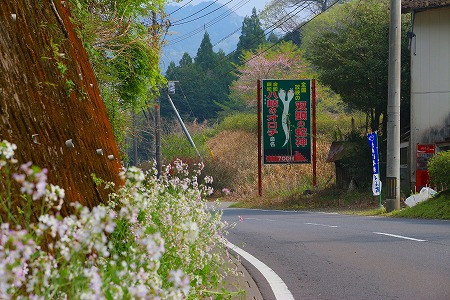
おおお、これこそまさに双頭蛇を祀る神社の看板ではないか！
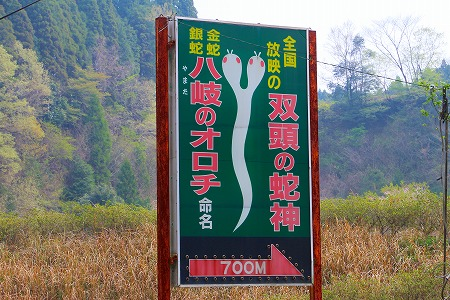
全国放映の双頭の蛇神
金蛇銀蛇 八岐のオロチ命名
そしてラブホのような700Mの矢印。
いい。凄くいい看板だ。
いやが上にも期待が高まるじゃないか！
どうしよう。全長500メートルの巨大なコンクリ蛇とかがあったら。
俺、興奮してチビっちゃうな、きっと。
進んで行くとこんな看板が。
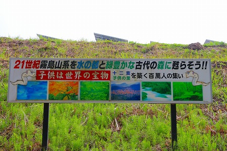
21世紀霧島山系を水の都と緑豊かな古代の森に甦らそう！！
緑豊かな巨大双頭蛇の森にするんですよね？そうですよね？
看板の傍らにさりげなく双頭蛇のイラストが挿入されているあたりが頼もしい。
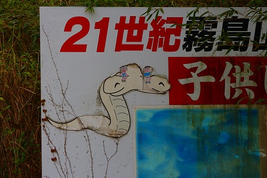
…というわけで夢の巨大双頭蛇像を目指して先へ進む。
すると予想（というか期待）と全く違う光景が飛び込んできたのだ。
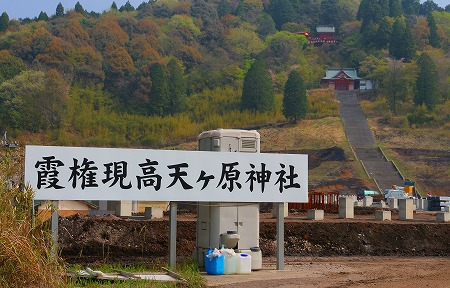
ちょ、何コレ？
見れば斜面をのた打ち回る巨大双頭蛇など見あたらず、ソーラーパネルが着々と建設されていたのだ。
どうやら巨大双頭蛇のモニュメントは造られる事なく、太陽光発電をする場所になってしまったようだ。
まあ、時節柄文句も言えませんが、巨大双頭蛇を期待していた身としては肩透かしにも程があるぞ！
とは言ってみたものの
…まあ、何となくそんな予感はしてたけどね…。
もしかしたら
鹿児島の巨大龍みたいなのがあったらいいなー、という淡い期待だけはしてらんですけどね…
気を取り直して山の中腹に建つ赤い社殿を目指す。
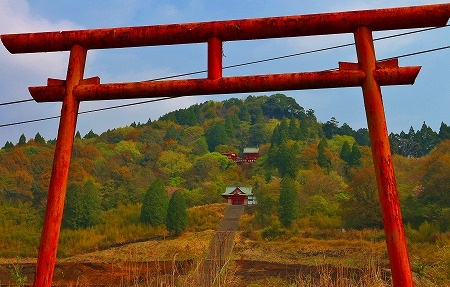
きっと双頭蛇や黄金の大蛇が出迎えてくれるはず。
…と、一番上の社殿まで車で登ってみると様子がおかしい。
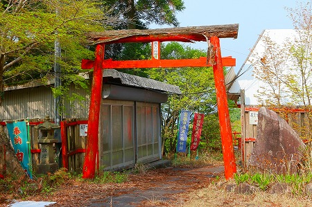
これは…もしかして
廃墟っちゃってます？
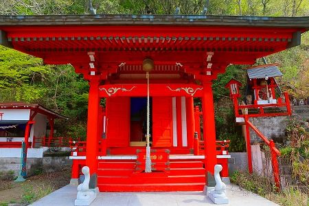
雑草は延び、人の気配はない。
建物の所々も傷んでいる。
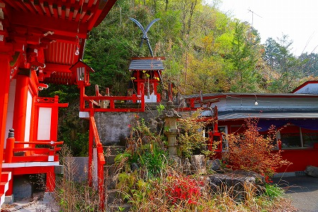
どうやら廃墟になっちゃってるようだな。
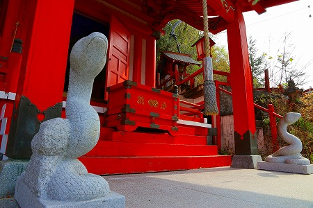
それでも社殿の中には大日如来が安置されたていたり（なぜ仏像があるのかは永遠の謎だ）、狛犬ならぬ狛蛇がいたりする。
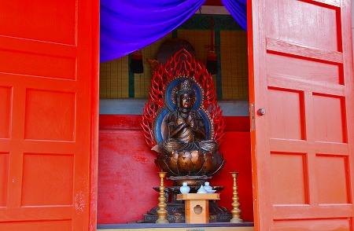
状況は完全に廃墟なのだが、廃墟化したとしても日は浅いように思う。
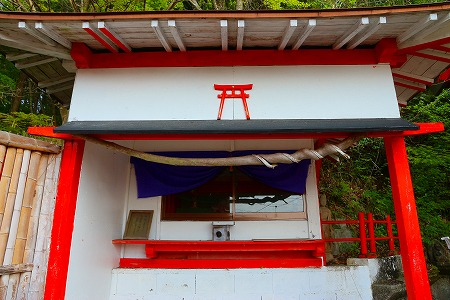
恐らく蛇が祭られていたのであろう。
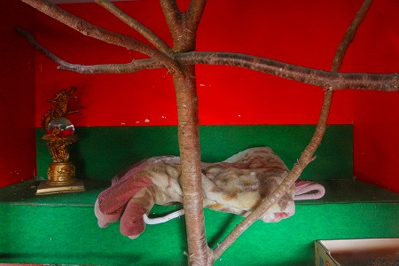
中には毛布があるだけで
金の大蛇も双頭蛇も見当たらなかった。
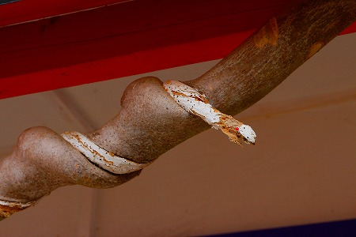
木の幹に巻きついた蛇の飾りも朽ちかけていた。
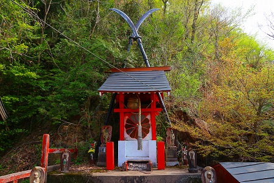
何かの末社。後ろでクロスしている薙刀が異様な迫力を示していた。
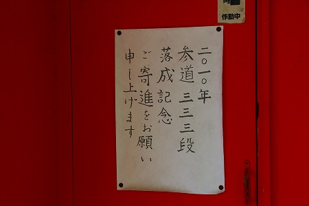
2010年に参道が完成する予定だったのだろう。
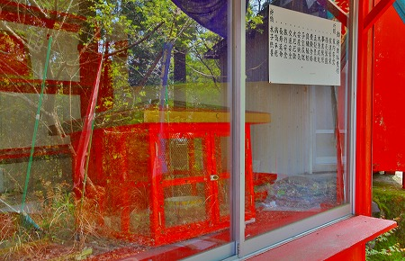
お守りなどを売っていたのだろうが、もぬけの殻だった。
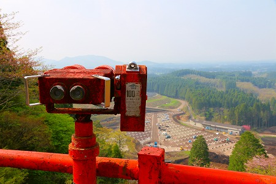
今はソーラーパネルを取り付ける台座が着々と設置されている光景が広がっているがかつてはどんな風景が広がっていたのだろう。
本殿の裏手に洞窟があった。
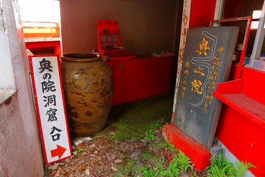
チョットお邪魔しますよ…
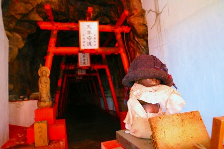
坑道のような洞窟を進んでいく。
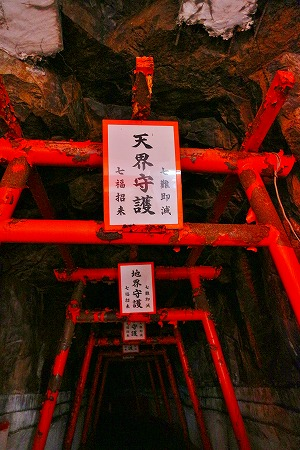
一番奥には不動さまが祀られていた。
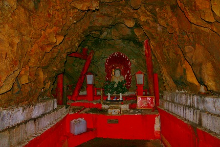
不動様にはみかんが供えられていたので
まるっきり放置されている訳ではないようだ。
とはいえかなり荒廃してはいるのだが。
次に階段をくだってかつての本殿だった建物に向かう。
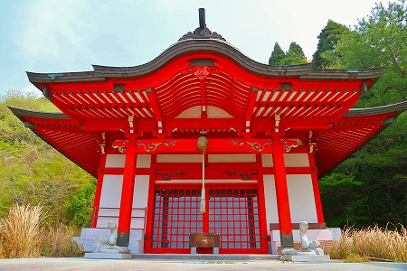
ああ、こりゃあもぬけの殻だわい。
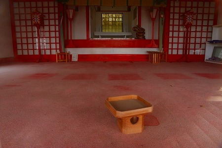
「ROADSAIDE JAPAN」取材時（1997年7月）にはここが本殿で、件の黄の大蛇や双頭蛇を見せていたようだ。
祭壇の片隅に取り残された蛇のオブジェが悲しい。
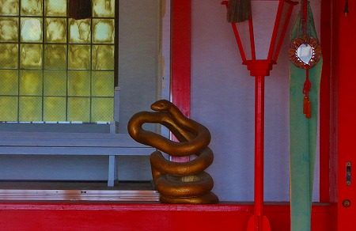
この建物の裏にも浅い洞窟があった。
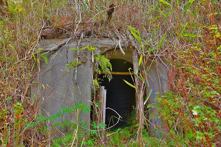
中には不動明王が。
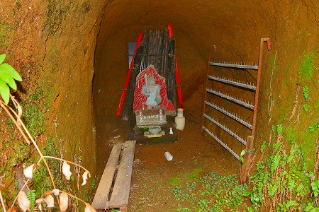
長い階段の下はソーラーパネルだらけ。
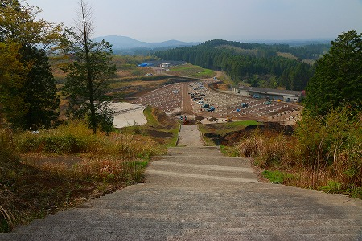
何故か社殿のある場所とは離れたところ、丁度工事現場の先に神社の建物があったので寄ってみた。
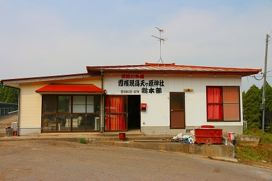
中にいた方に事情を伺うも、どうも工事関係の詰め所のようで、まるで要領を得ない。
どうも信仰施設としては体を成していないようだ。
と、その一画にあった石碑を見て納得。
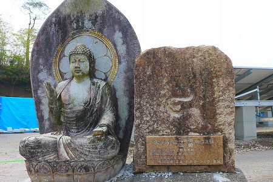
それは
双頭蛇の慰霊碑だったのだ。
蛇が死んだのが2002年。
その辺りがもしかしたらこの神社の終わりの始まりだったのかもしれない。
というわけで蛇パークどころか蛇はいないし、神社もほぼ消えかかってました。
しかし、
蛇2匹でここまで立派な神社が建ったという現象の跡だけは目の当たりに出来たのでよしとしよう。
…というわけで気を取り直して次の蛇信仰の現場に向かうとしよう。
次の蛇信仰へＧＯ！
参照；ROADSADE JAPAN 西日本編 ちくま文庫 2000年刊